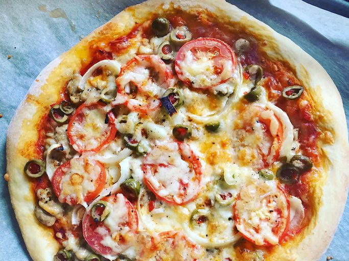

Pizzas

Discription
A delicious pizza with extra cheese, tomato base along with a good amount of different meats such as bacon,salami,steak
Ingredients
- Flour
- Water
- Yeast
- Assorted meats of choice
- Mozzarela
- Tomato paste
- Basil
- Origanum
- Salt
- Pepper
Steps to make
- Bloom yeast in lukewarm water
- Mix salt, flour and sugar(only if desired, will help with yeast fermentation)
- Cook tomato paste with water , then add basil,salt and pepper. Simmer until thickened to sauce
- Cook meats if desired (THe meat will be cooked in the oven either way)
- Add yeast water to the flour mixture and combine and knead until it's not sticky to the hands, then let rest and rise for 1 hour
- Roll dough out into circle (or other shapes if you want) and pre bake it in the oven
- Spread tomato sauce on semi-cooked base
- Sprinkle on cheese
- Add meats and Origanum
- Bake in the oven untill cheese is golden brown or crust begins to darken